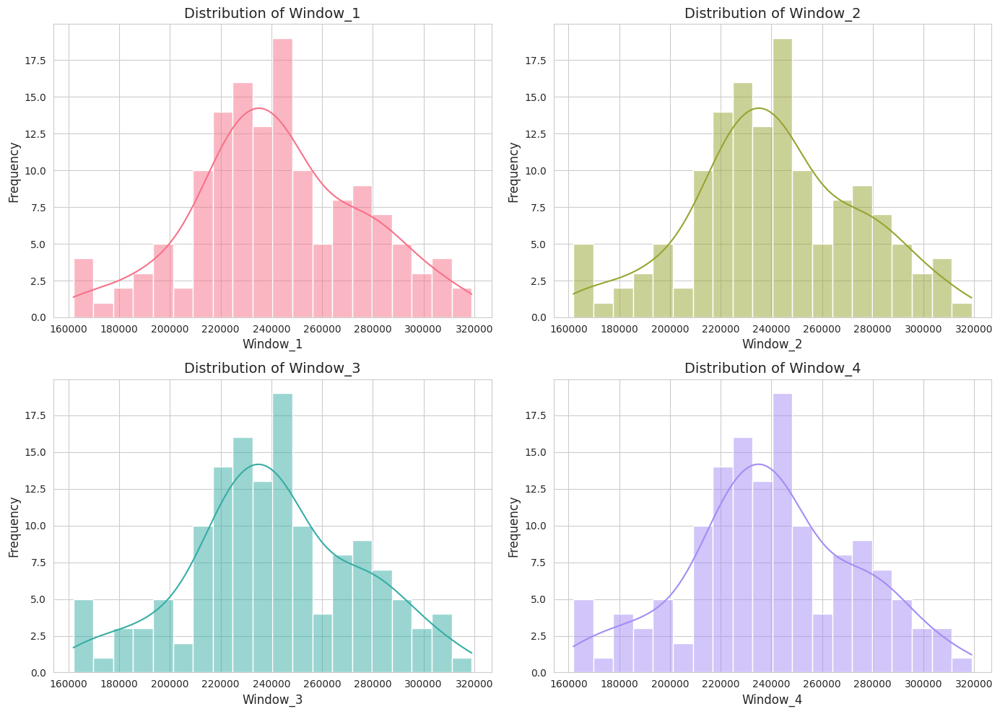
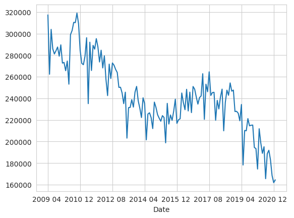
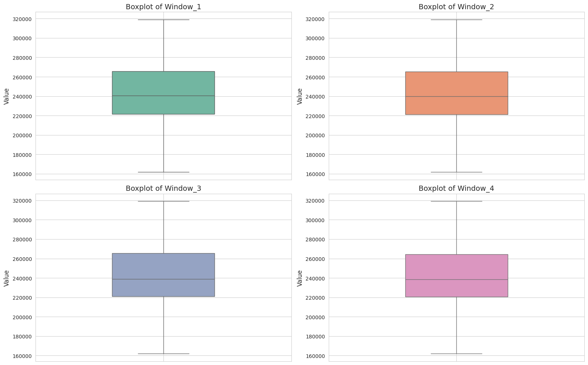
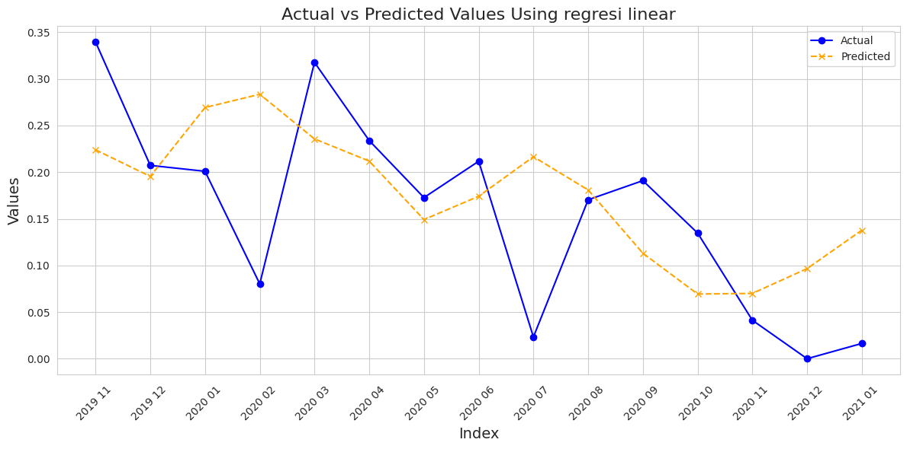
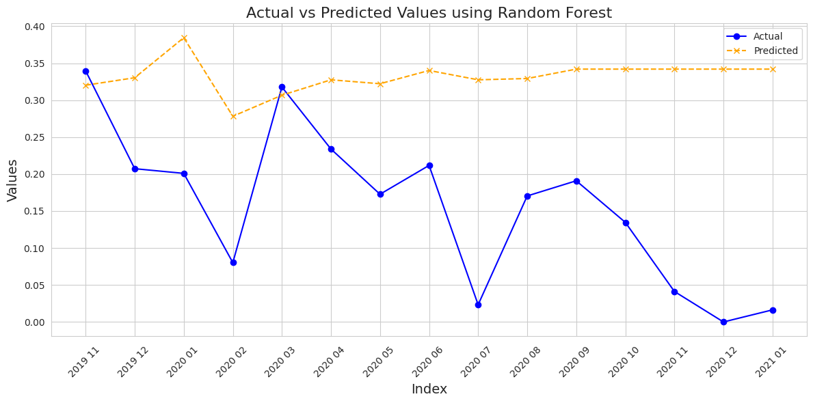
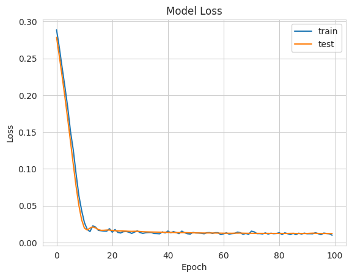
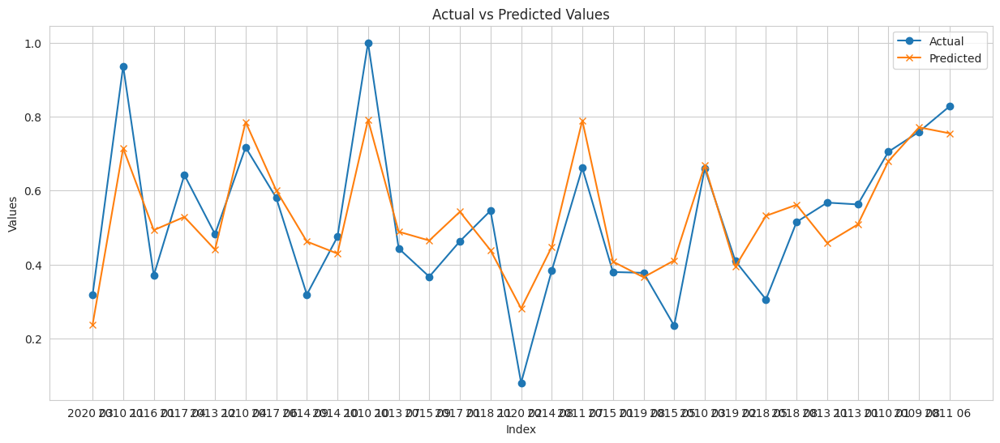
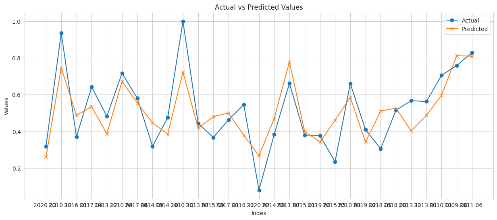
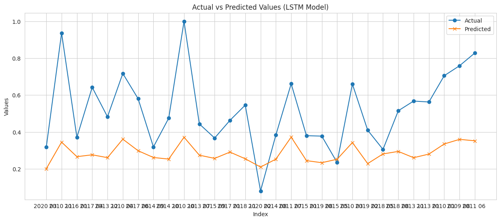
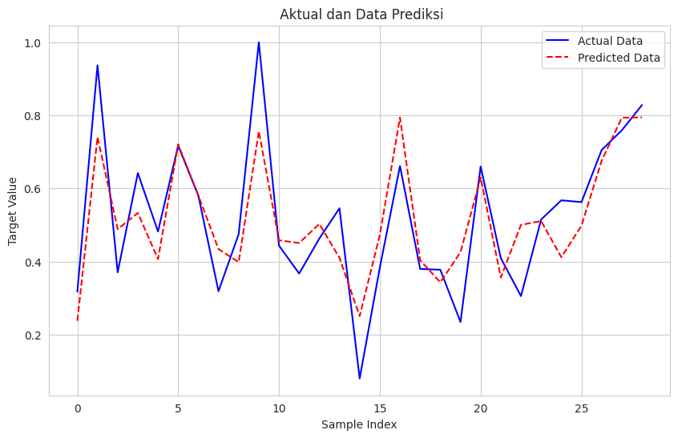

prediksi impor minyak mentah dari Dunia ke AS.#
Pendahuluan#
Konsumsi energi dunia semakin meningkat seiring dengan pertumbuhan populasi dan industrialisasi. Minyak mentah merupakan salah satu sumber energi utama yang sangat penting bagi perekonomian global, terutama di negara-negara maju seperti Amerika Serikat. Impor minyak mentah menjadi salah satu indikator utama untuk mengetahui tingkat ketergantungan suatu negara terhadap sumber energi luar negeri, dan juga sebagai dasar untuk merumuskan kebijakan energi yang lebih baik. Data historis impor minyak mentah dari berbagai negara ke Amerika Serikat memberikan gambaran tentang tren kebutuhan energi dan hubungan perdagangan internasional di sektor energi.
Dalam penelitian ini, kami akan menganalisis tren impor minyak mentah Amerika Serikat dari berbagai negara, menggunakan data bulanan dalam ribuan barel. Pendekatan analisis menggunakan metode regresi untuk memprediksi pola impor di masa mendatang berdasarkan data historis yang ada. Hasil dari penelitian ini diharapkan dapat memberikan kontribusi dalam pengambilan kebijakan terkait energi di Amerika Serikat, khususnya dalam konteks ketahanan energi dan diversifikasi sumber impor.
1. Latar Belakang#
Sejak dekade terakhir, Amerika Serikat telah berusaha untuk mengurangi ketergantungannya pada impor minyak mentah melalui peningkatan produksi domestik serta penggunaan energi alternatif. Meskipun demikian, impor minyak mentah tetap menjadi bagian penting dalam memenuhi kebutuhan energi nasional. Fluktuasi harga minyak global, kondisi geopolitik, serta perubahan dalam kebijakan energi domestik dan internasional memengaruhi volume impor minyak mentah. Dengan demikian, penting untuk memahami tren impor ini agar dapat mengantisipasi perubahan di masa depan serta menyusun strategi yang tepat untuk menjaga ketahanan energi.
Data impor minyak mentah memberikan wawasan tentang dinamika pasar energi dan bagaimana Amerika Serikat menyesuaikan kebutuhan energinya dengan pasokan global. Analisis tren impor minyak mentah juga dapat membantu dalam merumuskan kebijakan ekonomi dan lingkungan yang lebih baik, seperti pengurangan emisi karbon dan peralihan ke energi terbarukan.
2. Tujuan#
Menganalisis tren impor minyak mentah ke Amerika Serikat dari berbagai negara.
Membuat prediksi terhadap volume impor minyak mentah di masa depan menggunakan metode regresi
3. Rumusan Masalah#
Bagaimana tren impor minyak mentah ke Amerika Serikat dari tahun ke tahun?
Bagaimana prediksi volume impor minyak mentah di masa mendatang berdasarkan data historis?
Pembahasan#
1. Data Understanding#
Pengumpulan Data#
import pandas as pd
# Load dataset
file_path = open('Imports Oil.csv')
data = pd.read_csv(file_path)
print(data.head())
---------------------------------------------------------------------------
FileNotFoundError Traceback (most recent call last)
<ipython-input-1-9f5973925c40> in <cell line: 4>()
2
3 # Load dataset
----> 4 file_path = open('Imports Oil.csv')
5 data = pd.read_csv(file_path)
6 print(data.head())
FileNotFoundError: [Errno 2] No such file or directory: 'Imports Oil.csv'
Struktur Data:#
Date and Month : Menunjukkan kapan impor minyak mentah terjadi, dengan format tahun dan bulan (misalnya, “2009 01” untuk Januari 2009).
Crude oil imports from the World to the US (a thousand barrels) : Volume minyak mentah yang diimpor ke AS dalam ribuan barel untuk setiap bulan yang bersangkutan. Angka ini menggambarkan total impor dari seluruh dunia ke Amerika Serikat.
2. Data Preprocessing#
Pada bagian ini dataset akan diproses sebelum digunakan untuk membangun model. Dataset akan melalui data cleaning, pendeteksian outlier, dan pendeteksian missing value.
# Tahap 1: Pembersihan nama kolom dari spasi yang tidak perlu
data.columns = data.columns.str.strip()
# Tahap 2: Pendeteksian nilai yang hilang (missing values)
missing_values = data.isnull().sum()
print("Jumlah missing value per kolom:")
print(missing_values)
Jumlah missing value per kolom:
Date and Month 0
Crude oil imports from the World to the US (a thousand barrels) 0
dtype: int64
# Tahap 3: Pendeteksian Outlier menggunakan metode IQR
# Menghitung Q1 (kuartil pertama) dan Q3 (kuartil ketiga)
Q1 = data['Crude oil imports from the World to the US (a thousand barrels)'].quantile(0.25)
Q3 = data['Crude oil imports from the World to the US (a thousand barrels)'].quantile(0.75)
# Menghitung IQR
IQR = Q3 - Q1
# Menentukan batas bawah dan batas atas untuk mendeteksi outlier
lower_bound = Q1 - 1.5 * IQR
upper_bound = Q3 + 1.5 * IQR
# Mendeteksi nilai outlier
outliers = data[(data['Crude oil imports from the World to the US (a thousand barrels)'] < lower_bound) |
(data['Crude oil imports from the World to the US (a thousand barrels)'] > upper_bound)]
# Menampilkan hasil deteksi outlier
if outliers.empty:
print("Tidak ada outlier yang terdeteksi.")
else:
print("Outlier yang terdeteksi:")
print(outliers)
Tidak ada outlier yang terdeteksi.
# Tahap 1: Pembersihan nama kolom dari spasi yang tidak perlu
data.columns = data.columns.str.strip()
# Tahap 2: Pendeteksian nilai yang hilang (missing values)
missing_values = data.isnull().sum()
print("Jumlah missing value per kolom:")
print(missing_values)
# Tahap 3: Pendeteksian Outlier menggunakan metode IQR
# Menghitung Q1 (kuartil pertama) dan Q3 (kuartil ketiga)
Q1 = data['Crude oil imports from the World to the US (a thousand barrels)'].quantile(0.25)
Q3 = data['Crude oil imports from the World to the US (a thousand barrels)'].quantile(0.75)
# Menghitung IQR
IQR = Q3 - Q1
# Menentukan batas bawah dan batas atas untuk mendeteksi outlier
lower_bound = Q1 - 1.5 * IQR
upper_bound = Q3 + 1.5 * IQR
# Mendeteksi nilai outlier
outliers = data[(data['Crude oil imports from the World to the US (a thousand barrels)'] < lower_bound) |
(data['Crude oil imports from the World to the US (a thousand barrels)'] > upper_bound)]
# Menampilkan hasil deteksi outlier
if outliers.empty:
print("Tidak ada outlier yang terdeteksi.")
else:
print("Outlier yang terdeteksi:")
print(outliers)
Jumlah missing value per kolom:
Date and Month 0
Crude oil imports from the World to the US (a thousand barrels) 0
dtype: int64
Tidak ada outlier yang terdeteksi.
# Menghitung matriks korelasi
correlation_matrix = data[['Crude oil imports from the World to the US (a thousand barrels)']].corr()
# Menampilkan matriks korelasi
print("Matriks Korelasi:")
print(correlation_matrix)
Matriks Korelasi:
Crude oil imports from the World to the US (a thousand barrels)
Crude oil imports from the World to the US (a t... 1.0
Sliding Window#
import pandas as pd
# Fungsi untuk membuat sliding window
def create_sliding_window(data, window_size=4):
# Mengambil data impor minyak mentah dan tanggal
oil_imports = data['Crude oil imports from the World to the US (a thousand barrels)']
dates = data['Date and Month']
# Membuat list untuk menampung windows
windows = []
window_dates = []
# Loop untuk membuat sliding window
for i in range(len(oil_imports) - window_size + 1):
windows.append(oil_imports[i:i + window_size].values)
window_dates.append(dates[i + window_size - 1]) # Ambil tanggal akhir dari window
# Membuat DataFrame dengan index berupa tanggal
df_sliding_windows = pd.DataFrame(windows, columns=[f'Window_{i+1}' for i in range(window_size)], index=window_dates)
df_sliding_windows.index.name = 'Date' # Menamai index
return df_sliding_windows
# Membuat sliding window dengan ukuran 3
df_sliding_windows = create_sliding_window(data, window_size=4)
# Menampilkan DataFrame
print(df_sliding_windows) # Menampilkan contoh 5 baris pertama dari sliding windows
Window_1 Window_2 Window_3 Window_4
Date
2009 04 317275 262339 303897 285934
2009 05 262339 303897 285934 281147
2009 06 303897 285934 281147 284093
2009 07 285934 281147 284093 287569
2009 08 281147 284093 287569 279111
... ... ... ... ...
2020 09 191919 183087 168406 161926
2020 10 183087 168406 161926 164494
2020 11 168406 161926 164494 168655
2020 12 161926 164494 168655 178597
2021 01 164494 168655 178597 181197
[142 rows x 4 columns]
print(df_sliding_windows.index) # Untuk memastikan index
Index(['2009 04 ', '2009 05 ', '2009 06 ', '2009 07 ', '2009 08 ', '2009 09 ',
'2009 10 ', '2009 11 ', '2009 12 ', '2010 01 ',
...
'2020 04 ', '2020 05 ', '2020 06 ', '2020 07 ', '2020 08 ', '2020 09 ',
'2020 10 ', '2020 11 ', '2020 12 ', '2021 01 '],
dtype='object', name='Date', length=142)
Fungsi create_sliding_window: window_size: Menentukan ukuran jendela Looping digunakan untuk mengambil subset data dalam ukuran jendela yang ditentukan, dan jendela bergerak maju satu data dalam setiap iterasi.
Visualisasi data#
import matplotlib.pyplot as plt
import seaborn as sns
# Mengambil semua kolom fitur
features = list(df_sliding_windows.columns)
# Menghitung jumlah subplot yang diperlukan
num_features = len(features)
num_rows = (num_features + 1) // 2 # Pembulatan ke atas untuk jumlah baris
# Mengatur gaya seaborn untuk tampilan lebih menarik
sns.set_style("whitegrid")
# Membuat subplot sesuai dengan jumlah fitur
fig, axs = plt.subplots(num_rows, 2, figsize=(14, num_rows * 5))
# Membuat palet warna yang berbeda untuk setiap histogram
colors = sns.color_palette("husl", num_features)
# Melakukan plotting untuk setiap fitur
for i, feature in enumerate(features):
row = i // 2
col = i % 2
sns.histplot(df_sliding_windows[feature], bins=20, color=colors[i], ax=axs[row, col], kde=True)
axs[row, col].set_title(f'Distribution of {feature}', fontsize=14)
axs[row, col].set_xlabel(feature, fontsize=12)
axs[row, col].set_ylabel('Frequency', fontsize=12)
axs[row, col].tick_params(axis='both', which='major', labelsize=10)
# Menghapus subplot yang tidak terpakai jika jumlah fitur ganjil
if num_features % 2 == 1:
fig.delaxes(axs[num_rows - 1, 1])
# Menyesuaikan layout agar tidak saling tumpang tindih
plt.tight_layout()
# Menampilkan plot
plt.show()

df_sliding_windows['Window_1'].plot()
<Axes: xlabel='Date'>

deteksi missing value#
print(df_sliding_windows.isnull().sum())
Window_1 0
Window_2 0
Window_3 0
Window_4 0
dtype: int64
Pendeteksian Outlier#
import numpy as np
import matplotlib.pyplot as plt
import seaborn as sb
# Daftar kolom fitur yang akan digunakan
features = ['Window_1', 'Window_2', 'Window_3', 'Window_4']
# Mengatur ukuran figure
plt.figure(figsize=(16, 10))
# Menggunakan palet warna dari seaborn
colors = sb.color_palette("Set2", len(features))
# Membuat subplot untuk setiap fitur
for i, col in enumerate(features):
plt.subplot(2, 2, i + 1)
# Membuat boxplot untuk tiap fitur
sb.boxplot(data=df_sliding_windows[col], color=colors[i], width=0.4)
# Memberikan judul yang jelas pada tiap plot
plt.title(f'Boxplot of {col}', fontsize=14)
# Memberikan label yang lebih jelas pada sumbu y
plt.ylabel('Value', fontsize=12)
# Menambahkan grid pada tiap plot untuk mempermudah pembacaan
plt.grid(True)
# Menyesuaikan layout agar tidak terlalu padat
plt.tight_layout()
# Menampilkan plot
plt.show()

import numpy as np
import pandas as pd
# Menghitung IQR dan menghapus outlier
def remove_outliers(df, features):
df_clean = df.copy() # Membuat salinan agar data asli tidak terpengaruh
for col in features:
# Menghitung Q1, Q3 dan IQR
Q1 = df_clean[col].quantile(0.25)
Q3 = df_clean[col].quantile(0.75)
IQR = Q3 - Q1
# Menentukan batas untuk outlier
lower_bound = Q1 - 1.5 * IQR
upper_bound = Q3 + 1.5 * IQR
# Hapus outlier
df_clean = df_clean[(df_clean[col] >= lower_bound) & (df_clean[col] <= upper_bound)]
return df_clean
# Fitur yang ingin dideteksi outlier dan dibersihkan
features = ['Window_1', 'Window_2', 'Window_3', 'Window_4']
# Menerapkan fungsi penghapusan outlier
df_slide_cleaned = remove_outliers(df_sliding_windows, features)
# Tampilkan data yang telah dibersihkan
print("Data yang telah dibersihkan dari outlier:")
print(df_slide_cleaned)
Data yang telah dibersihkan dari outlier:
Window_1 Window_2 Window_3 Window_4
Date
2009 04 317275 262339 303897 285934
2009 05 262339 303897 285934 281147
2009 06 303897 285934 281147 284093
2009 07 285934 281147 284093 287569
2009 08 281147 284093 287569 279111
... ... ... ... ...
2020 09 191919 183087 168406 161926
2020 10 183087 168406 161926 164494
2020 11 168406 161926 164494 168655
2020 12 161926 164494 168655 178597
2021 01 164494 168655 178597 181197
[142 rows x 4 columns]
normalisasi data#
from sklearn.preprocessing import MinMaxScaler
# Inisialisasi MinMaxScaler
scaler = MinMaxScaler()
# Normalisasi semua kolom kecuali indeks
df_normalisasi = pd.DataFrame(scaler.fit_transform(df_slide_cleaned), columns=df_slide_cleaned.columns, index=df_slide_cleaned.index)
print(df_normalisasi)
Window_1 Window_2 Window_3 Window_4
Date
2009 04 0.989075 0.639309 0.903900 0.789533
2009 05 0.639309 0.903900 0.789533 0.759055
2009 06 0.903900 0.789533 0.759055 0.777812
2009 07 0.789533 0.759055 0.777812 0.799943
2009 08 0.759055 0.777812 0.799943 0.746092
... ... ... ... ...
2020 09 0.190959 0.134728 0.041257 0.000000
2020 10 0.134728 0.041257 0.000000 0.016350
2020 11 0.041257 0.000000 0.016350 0.042842
2020 12 0.000000 0.016350 0.042842 0.106141
2021 01 0.016350 0.042842 0.106141 0.122694
[142 rows x 4 columns]
3. Modeling#
membagi data#
from sklearn.model_selection import train_test_split
# Pastikan df_normalisasi sudah terdefinisi dan berisi data yang diperlukan
# Mengambil fitur (X) dengan menghapus kolom target (Window_1)
X_train_model = df_normalisasi.drop(columns=['Window_1'])
# Mengambil kolom target (y) yaitu Window_1
y_train_model = df_normalisasi['Window_1']
# Memisahkan data menjadi data latih dan data uji
# Menggunakan test_size=0.2 untuk 20% data sebagai data uji
# shuffle=False agar data tetap dalam urutan waktu (jika relevan)
X_train, X_test, y_train, y_test = train_test_split(
X_train_model,
y_train_model,
test_size=0.1,
random_state=42,
shuffle=False
)
# Menampilkan ukuran dari data latih dan data uji untuk verifikasi
print(f'X_train shape: {X_train.shape}')
print(f'X_test shape: {X_test.shape}')
print(f'y_train shape: {y_train.shape}')
print(f'y_test shape: {y_test.shape}')
X_train shape: (127, 3)
X_test shape: (15, 3)
y_train shape: (127,)
y_test shape: (15,)
memiliki total 142 data poin dalam dataset awal (113 untuk pelatihan dan 29 untuk pengujian). Pemisahan data dilakukan dengan proporsi 80% untuk pelatihan dan 20% untuk pengujian, yang merupakan praktik umum dalam pembelajaran mesin.
Membangun Model#
Linear Regression#
import pandas as pd
import numpy as np
import matplotlib.pyplot as plt
from sklearn.linear_model import LinearRegression
from sklearn.metrics import mean_squared_error, r2_score
from sklearn.model_selection import train_test_split
# Inisialisasi dan latih model regresi linear
model = LinearRegression()
model.fit(X_train, y_train)
# Prediksi pada data uji
y_pred = model.predict(X_test)
# Evaluasi model
mse = mean_squared_error(y_test, y_pred)
r2 = r2_score(y_test, y_pred)
print(f'Mean Squared Error: {mse}')
print(f'R-squared: {r2}')
# Tampilkan hasil prediksi vs aktual
results = pd.DataFrame({'Actual': y_test, 'Predicted': y_pred}, index=y_test.index)
print(results)
# Plot hasil
plt.figure(figsize=(12, 6))
plt.plot(results.index, results['Actual'], marker='o', linestyle='-', color='blue', label='Actual')
plt.plot(results.index, results['Predicted'], marker='x', linestyle='--', color='orange', label='Predicted')
# Menambahkan label dan judul
plt.title('Actual vs Predicted Values Using regresi linear', fontsize=16)
plt.xlabel('Index', fontsize=14)
plt.ylabel('Values', fontsize=14)
plt.legend()
plt.grid(True)
# Menampilkan plot
plt.xticks(rotation=45) # Memutar label sumbu x agar lebih mudah dibaca
plt.tight_layout() # Mengatur layout agar tidak bertabrakan
plt.show()
Mean Squared Error: 0.009429088899266691
R-squared: 0.0947443885219631
Actual Predicted
Date
2019 11 0.339649 0.223963
2019 12 0.207296 0.195499
2020 01 0.200980 0.269334
2020 02 0.080253 0.283567
2020 03 0.317773 0.235683
2020 04 0.233897 0.211875
2020 05 0.172757 0.149194
2020 06 0.211728 0.174184
2020 07 0.023302 0.216599
2020 08 0.170420 0.180929
2020 09 0.190959 0.113112
2020 10 0.134728 0.069346
2020 11 0.041257 0.070004
2020 12 0.000000 0.096622
2021 01 0.016350 0.137782

Random Forest#
import pandas as pd
import numpy as np
import matplotlib.pyplot as plt
from sklearn.ensemble import RandomForestRegressor
from sklearn.metrics import mean_squared_error, r2_score
from sklearn.model_selection import train_test_split
# Inisialisasi dan latih model Random Forest
model = RandomForestRegressor(n_estimators=100, random_state=42)
model.fit(X_train, y_train)
# Prediksi pada data uji
y_pred = model.predict(X_test)
# Evaluasi model
mse = mean_squared_error(y_test, y_pred)
r2 = r2_score(y_test, y_pred)
print(f'Mean Squared Error: {mse}')
print(f'R-squared: {r2}')
# Tampilkan hasil prediksi vs aktual
results = pd.DataFrame({'Actual': y_test, 'Predicted': y_pred}, index=y_test.index)
print(results)
# Plot hasil
plt.figure(figsize=(12, 6))
plt.plot(results.index, results['Actual'], marker='o', linestyle='-', color='blue', label='Actual')
plt.plot(results.index, results['Predicted'], marker='x', linestyle='--', color='orange', label='Predicted')
# Menambahkan label dan judul
plt.title('Actual vs Predicted Values using Random Forest', fontsize=16)
plt.xlabel('Index', fontsize=14)
plt.ylabel('Values', fontsize=14)
plt.legend()
plt.grid(True)
# Menampilkan plot
plt.xticks(rotation=45) # Memutar label sumbu x agar lebih mudah dibaca
plt.tight_layout() # Mengatur layout agar tidak bertabrakan
plt.show()
Mean Squared Error: 0.04220431151393445
R-squared: -3.0518962367114364
Actual Predicted
Date
2019 11 0.339649 0.320203
2019 12 0.207296 0.330321
2020 01 0.200980 0.384523
2020 02 0.080253 0.278209
2020 03 0.317773 0.306679
2020 04 0.233897 0.327519
2020 05 0.172757 0.322213
2020 06 0.211728 0.340151
2020 07 0.023302 0.327519
2020 08 0.170420 0.329267
2020 09 0.190959 0.341979
2020 10 0.134728 0.341979
2020 11 0.041257 0.341979
2020 12 0.000000 0.341979
2021 01 0.016350 0.341979

LSTM#
import pandas as pd
import numpy as np
import matplotlib.pyplot as plt
from sklearn.metrics import mean_squared_error, r2_score
from sklearn.model_selection import train_test_split
from sklearn.preprocessing import MinMaxScaler
from tensorflow.keras.models import Sequential
from tensorflow.keras.layers import LSTM, Dense, Dropout
# Reshape input data for LSTM
X_train_lstm = np.reshape(X_train, (X_train.shape[0], 1, X_train.shape[1]))
X_test_lstm = np.reshape(X_test, (X_test.shape[0], 1, X_test.shape[1]))
# Membangun model LSTM
model_lstm = Sequential()
model_lstm.add(LSTM(50, return_sequences=True, input_shape=(X_train_lstm.shape[1], X_train_lstm.shape[2])))
model_lstm.add(Dropout(0.2))
model_lstm.add(LSTM(50, return_sequences=False))
model_lstm.add(Dropout(0.2))
model_lstm.add(Dense(1))
# Compile the model
model_lstm.compile(optimizer='adam', loss='mse')
# Train the model
history = model_lstm.fit(X_train_lstm, y_train, epochs=100, batch_size=32, validation_data=(X_test_lstm, y_test), verbose=1)
# Make predictions
y_pred = model_lstm.predict(X_test_lstm)
# Flatten predictions for comparison
y_pred_flat = y_pred.flatten()
# Evaluate the model
mse = mean_squared_error(y_test, y_pred_flat)
r2 = r2_score(y_test, y_pred_flat)
print(f'Mean Squared Error: {mse}')
print(f'R-squared: {r2}')
# Plot training and validation loss
plt.plot(history.history['loss'], label='train')
plt.plot(history.history['val_loss'], label='test')
plt.title('Model Loss')
plt.ylabel('Loss')
plt.xlabel('Epoch')
plt.legend()
plt.show()
/usr/local/lib/python3.10/dist-packages/keras/src/layers/rnn/rnn.py:204: UserWarning: Do not pass an `input_shape`/`input_dim` argument to a layer. When using Sequential models, prefer using an `Input(shape)` object as the first layer in the model instead.
super().__init__(**kwargs)
Epoch 1/100
4/4 ━━━━━━━━━━━━━━━━━━━━ 8s 217ms/step - loss: 0.2988 - val_loss: 0.2788
Epoch 2/100
4/4 ━━━━━━━━━━━━━━━━━━━━ 1s 13ms/step - loss: 0.2770 - val_loss: 0.2526
Epoch 3/100
4/4 ━━━━━━━━━━━━━━━━━━━━ 0s 13ms/step - loss: 0.2474 - val_loss: 0.2257
Epoch 4/100
4/4 ━━━━━━━━━━━━━━━━━━━━ 0s 14ms/step - loss: 0.2086 - val_loss: 0.1975
Epoch 5/100
4/4 ━━━━━━━━━━━━━━━━━━━━ 0s 13ms/step - loss: 0.1827 - val_loss: 0.1678
Epoch 6/100
4/4 ━━━━━━━━━━━━━━━━━━━━ 0s 16ms/step - loss: 0.1417 - val_loss: 0.1372
Epoch 7/100
4/4 ━━━━━━━━━━━━━━━━━━━━ 0s 14ms/step - loss: 0.1326 - val_loss: 0.1061
Epoch 8/100
4/4 ━━━━━━━━━━━━━━━━━━━━ 0s 13ms/step - loss: 0.0945 - val_loss: 0.0765
Epoch 9/100
4/4 ━━━━━━━━━━━━━━━━━━━━ 0s 17ms/step - loss: 0.0689 - val_loss: 0.0506
Epoch 10/100
4/4 ━━━━━━━━━━━━━━━━━━━━ 0s 15ms/step - loss: 0.0467 - val_loss: 0.0308
Epoch 11/100
4/4 ━━━━━━━━━━━━━━━━━━━━ 0s 15ms/step - loss: 0.0253 - val_loss: 0.0195
Epoch 12/100
4/4 ━━━━━━━━━━━━━━━━━━━━ 0s 13ms/step - loss: 0.0202 - val_loss: 0.0169
Epoch 13/100
4/4 ━━━━━━━━━━━━━━━━━━━━ 0s 15ms/step - loss: 0.0144 - val_loss: 0.0194
Epoch 14/100
4/4 ━━━━━━━━━━━━━━━━━━━━ 0s 14ms/step - loss: 0.0239 - val_loss: 0.0212
Epoch 15/100
4/4 ━━━━━━━━━━━━━━━━━━━━ 0s 14ms/step - loss: 0.0206 - val_loss: 0.0197
Epoch 16/100
4/4 ━━━━━━━━━━━━━━━━━━━━ 0s 13ms/step - loss: 0.0154 - val_loss: 0.0175
Epoch 17/100
4/4 ━━━━━━━━━━━━━━━━━━━━ 0s 18ms/step - loss: 0.0157 - val_loss: 0.0165
Epoch 18/100
4/4 ━━━━━━━━━━━━━━━━━━━━ 0s 18ms/step - loss: 0.0152 - val_loss: 0.0166
Epoch 19/100
4/4 ━━━━━━━━━━━━━━━━━━━━ 0s 22ms/step - loss: 0.0174 - val_loss: 0.0169
Epoch 20/100
4/4 ━━━━━━━━━━━━━━━━━━━━ 0s 14ms/step - loss: 0.0200 - val_loss: 0.0168
Epoch 21/100
4/4 ━━━━━━━━━━━━━━━━━━━━ 0s 13ms/step - loss: 0.0151 - val_loss: 0.0163
Epoch 22/100
4/4 ━━━━━━━━━━━━━━━━━━━━ 0s 14ms/step - loss: 0.0194 - val_loss: 0.0159
Epoch 23/100
4/4 ━━━━━━━━━━━━━━━━━━━━ 0s 13ms/step - loss: 0.0159 - val_loss: 0.0157
Epoch 24/100
4/4 ━━━━━━━━━━━━━━━━━━━━ 0s 14ms/step - loss: 0.0119 - val_loss: 0.0156
Epoch 25/100
4/4 ━━━━━━━━━━━━━━━━━━━━ 0s 14ms/step - loss: 0.0158 - val_loss: 0.0156
Epoch 26/100
4/4 ━━━━━━━━━━━━━━━━━━━━ 0s 17ms/step - loss: 0.0162 - val_loss: 0.0154
Epoch 27/100
4/4 ━━━━━━━━━━━━━━━━━━━━ 0s 17ms/step - loss: 0.0140 - val_loss: 0.0152
Epoch 28/100
4/4 ━━━━━━━━━━━━━━━━━━━━ 0s 16ms/step - loss: 0.0129 - val_loss: 0.0151
Epoch 29/100
4/4 ━━━━━━━━━━━━━━━━━━━━ 0s 14ms/step - loss: 0.0146 - val_loss: 0.0152
Epoch 30/100
4/4 ━━━━━━━━━━━━━━━━━━━━ 0s 15ms/step - loss: 0.0171 - val_loss: 0.0152
Epoch 31/100
4/4 ━━━━━━━━━━━━━━━━━━━━ 0s 15ms/step - loss: 0.0143 - val_loss: 0.0149
Epoch 32/100
4/4 ━━━━━━━━━━━━━━━━━━━━ 0s 16ms/step - loss: 0.0125 - val_loss: 0.0146
Epoch 33/100
4/4 ━━━━━━━━━━━━━━━━━━━━ 0s 13ms/step - loss: 0.0126 - val_loss: 0.0144
Epoch 34/100
4/4 ━━━━━━━━━━━━━━━━━━━━ 0s 13ms/step - loss: 0.0125 - val_loss: 0.0143
Epoch 35/100
4/4 ━━━━━━━━━━━━━━━━━━━━ 0s 14ms/step - loss: 0.0156 - val_loss: 0.0142
Epoch 36/100
4/4 ━━━━━━━━━━━━━━━━━━━━ 0s 18ms/step - loss: 0.0124 - val_loss: 0.0141
Epoch 37/100
4/4 ━━━━━━━━━━━━━━━━━━━━ 0s 16ms/step - loss: 0.0105 - val_loss: 0.0141
Epoch 38/100
4/4 ━━━━━━━━━━━━━━━━━━━━ 0s 24ms/step - loss: 0.0105 - val_loss: 0.0140
Epoch 39/100
4/4 ━━━━━━━━━━━━━━━━━━━━ 0s 16ms/step - loss: 0.0149 - val_loss: 0.0139
Epoch 40/100
4/4 ━━━━━━━━━━━━━━━━━━━━ 0s 13ms/step - loss: 0.0120 - val_loss: 0.0138
Epoch 41/100
4/4 ━━━━━━━━━━━━━━━━━━━━ 0s 14ms/step - loss: 0.0147 - val_loss: 0.0137
Epoch 42/100
4/4 ━━━━━━━━━━━━━━━━━━━━ 0s 15ms/step - loss: 0.0131 - val_loss: 0.0136
Epoch 43/100
4/4 ━━━━━━━━━━━━━━━━━━━━ 0s 16ms/step - loss: 0.0149 - val_loss: 0.0135
Epoch 44/100
4/4 ━━━━━━━━━━━━━━━━━━━━ 0s 17ms/step - loss: 0.0134 - val_loss: 0.0134
Epoch 45/100
4/4 ━━━━━━━━━━━━━━━━━━━━ 0s 14ms/step - loss: 0.0109 - val_loss: 0.0134
Epoch 46/100
4/4 ━━━━━━━━━━━━━━━━━━━━ 0s 15ms/step - loss: 0.0153 - val_loss: 0.0133
Epoch 47/100
4/4 ━━━━━━━━━━━━━━━━━━━━ 0s 16ms/step - loss: 0.0148 - val_loss: 0.0134
Epoch 48/100
4/4 ━━━━━━━━━━━━━━━━━━━━ 0s 14ms/step - loss: 0.0117 - val_loss: 0.0133
Epoch 49/100
4/4 ━━━━━━━━━━━━━━━━━━━━ 0s 14ms/step - loss: 0.0122 - val_loss: 0.0131
Epoch 50/100
4/4 ━━━━━━━━━━━━━━━━━━━━ 0s 14ms/step - loss: 0.0132 - val_loss: 0.0131
Epoch 51/100
4/4 ━━━━━━━━━━━━━━━━━━━━ 0s 14ms/step - loss: 0.0147 - val_loss: 0.0130
Epoch 52/100
4/4 ━━━━━━━━━━━━━━━━━━━━ 0s 14ms/step - loss: 0.0129 - val_loss: 0.0130
Epoch 53/100
4/4 ━━━━━━━━━━━━━━━━━━━━ 0s 19ms/step - loss: 0.0131 - val_loss: 0.0129
Epoch 54/100
4/4 ━━━━━━━━━━━━━━━━━━━━ 0s 19ms/step - loss: 0.0101 - val_loss: 0.0129
Epoch 55/100
4/4 ━━━━━━━━━━━━━━━━━━━━ 0s 16ms/step - loss: 0.0149 - val_loss: 0.0128
Epoch 56/100
4/4 ━━━━━━━━━━━━━━━━━━━━ 0s 14ms/step - loss: 0.0139 - val_loss: 0.0129
Epoch 57/100
4/4 ━━━━━━━━━━━━━━━━━━━━ 0s 14ms/step - loss: 0.0124 - val_loss: 0.0129
Epoch 58/100
4/4 ━━━━━━━━━━━━━━━━━━━━ 0s 14ms/step - loss: 0.0146 - val_loss: 0.0128
Epoch 59/100
4/4 ━━━━━━━━━━━━━━━━━━━━ 0s 13ms/step - loss: 0.0133 - val_loss: 0.0127
Epoch 60/100
4/4 ━━━━━━━━━━━━━━━━━━━━ 0s 14ms/step - loss: 0.0104 - val_loss: 0.0126
Epoch 61/100
4/4 ━━━━━━━━━━━━━━━━━━━━ 0s 16ms/step - loss: 0.0103 - val_loss: 0.0126
Epoch 62/100
4/4 ━━━━━━━━━━━━━━━━━━━━ 0s 17ms/step - loss: 0.0125 - val_loss: 0.0125
Epoch 63/100
4/4 ━━━━━━━━━━━━━━━━━━━━ 0s 18ms/step - loss: 0.0120 - val_loss: 0.0125
Epoch 64/100
4/4 ━━━━━━━━━━━━━━━━━━━━ 0s 14ms/step - loss: 0.0113 - val_loss: 0.0125
Epoch 65/100
4/4 ━━━━━━━━━━━━━━━━━━━━ 0s 17ms/step - loss: 0.0124 - val_loss: 0.0126
Epoch 66/100
4/4 ━━━━━━━━━━━━━━━━━━━━ 0s 14ms/step - loss: 0.0140 - val_loss: 0.0126
Epoch 67/100
4/4 ━━━━━━━━━━━━━━━━━━━━ 0s 14ms/step - loss: 0.0140 - val_loss: 0.0127
Epoch 68/100
4/4 ━━━━━━━━━━━━━━━━━━━━ 0s 14ms/step - loss: 0.0120 - val_loss: 0.0126
Epoch 69/100
4/4 ━━━━━━━━━━━━━━━━━━━━ 0s 13ms/step - loss: 0.0117 - val_loss: 0.0125
Epoch 70/100
4/4 ━━━━━━━━━━━━━━━━━━━━ 0s 14ms/step - loss: 0.0112 - val_loss: 0.0124
Epoch 71/100
4/4 ━━━━━━━━━━━━━━━━━━━━ 0s 24ms/step - loss: 0.0129 - val_loss: 0.0125
Epoch 72/100
4/4 ━━━━━━━━━━━━━━━━━━━━ 0s 14ms/step - loss: 0.0157 - val_loss: 0.0124
Epoch 73/100
4/4 ━━━━━━━━━━━━━━━━━━━━ 0s 14ms/step - loss: 0.0112 - val_loss: 0.0124
Epoch 74/100
4/4 ━━━━━━━━━━━━━━━━━━━━ 0s 14ms/step - loss: 0.0117 - val_loss: 0.0123
Epoch 75/100
4/4 ━━━━━━━━━━━━━━━━━━━━ 0s 14ms/step - loss: 0.0120 - val_loss: 0.0123
Epoch 76/100
4/4 ━━━━━━━━━━━━━━━━━━━━ 0s 14ms/step - loss: 0.0117 - val_loss: 0.0123
Epoch 77/100
4/4 ━━━━━━━━━━━━━━━━━━━━ 0s 14ms/step - loss: 0.0101 - val_loss: 0.0124
Epoch 78/100
4/4 ━━━━━━━━━━━━━━━━━━━━ 0s 16ms/step - loss: 0.0141 - val_loss: 0.0123
Epoch 79/100
4/4 ━━━━━━━━━━━━━━━━━━━━ 0s 14ms/step - loss: 0.0137 - val_loss: 0.0123
Epoch 80/100
4/4 ━━━━━━━━━━━━━━━━━━━━ 0s 15ms/step - loss: 0.0125 - val_loss: 0.0123
Epoch 81/100
4/4 ━━━━━━━━━━━━━━━━━━━━ 0s 19ms/step - loss: 0.0124 - val_loss: 0.0123
Epoch 82/100
4/4 ━━━━━━━━━━━━━━━━━━━━ 0s 17ms/step - loss: 0.0113 - val_loss: 0.0123
Epoch 83/100
4/4 ━━━━━━━━━━━━━━━━━━━━ 0s 14ms/step - loss: 0.0135 - val_loss: 0.0122
Epoch 84/100
4/4 ━━━━━━━━━━━━━━━━━━━━ 0s 14ms/step - loss: 0.0108 - val_loss: 0.0123
Epoch 85/100
4/4 ━━━━━━━━━━━━━━━━━━━━ 0s 17ms/step - loss: 0.0104 - val_loss: 0.0124
Epoch 86/100
4/4 ━━━━━━━━━━━━━━━━━━━━ 0s 16ms/step - loss: 0.0119 - val_loss: 0.0124
Epoch 87/100
4/4 ━━━━━━━━━━━━━━━━━━━━ 0s 14ms/step - loss: 0.0115 - val_loss: 0.0122
Epoch 88/100
4/4 ━━━━━━━━━━━━━━━━━━━━ 0s 18ms/step - loss: 0.0104 - val_loss: 0.0122
Epoch 89/100
4/4 ━━━━━━━━━━━━━━━━━━━━ 0s 14ms/step - loss: 0.0114 - val_loss: 0.0122
Epoch 90/100
4/4 ━━━━━━━━━━━━━━━━━━━━ 0s 25ms/step - loss: 0.0128 - val_loss: 0.0122
Epoch 91/100
4/4 ━━━━━━━━━━━━━━━━━━━━ 0s 23ms/step - loss: 0.0121 - val_loss: 0.0122
Epoch 92/100
4/4 ━━━━━━━━━━━━━━━━━━━━ 0s 23ms/step - loss: 0.0132 - val_loss: 0.0124
Epoch 93/100
4/4 ━━━━━━━━━━━━━━━━━━━━ 0s 24ms/step - loss: 0.0130 - val_loss: 0.0126
Epoch 94/100
4/4 ━━━━━━━━━━━━━━━━━━━━ 0s 19ms/step - loss: 0.0118 - val_loss: 0.0124
Epoch 95/100
4/4 ━━━━━━━━━━━━━━━━━━━━ 0s 19ms/step - loss: 0.0120 - val_loss: 0.0123
Epoch 96/100
4/4 ━━━━━━━━━━━━━━━━━━━━ 0s 27ms/step - loss: 0.0106 - val_loss: 0.0121
Epoch 97/100
4/4 ━━━━━━━━━━━━━━━━━━━━ 0s 26ms/step - loss: 0.0122 - val_loss: 0.0122
Epoch 98/100
4/4 ━━━━━━━━━━━━━━━━━━━━ 0s 23ms/step - loss: 0.0124 - val_loss: 0.0122
Epoch 99/100
4/4 ━━━━━━━━━━━━━━━━━━━━ 0s 20ms/step - loss: 0.0120 - val_loss: 0.0121
Epoch 100/100
4/4 ━━━━━━━━━━━━━━━━━━━━ 0s 21ms/step - loss: 0.0093 - val_loss: 0.0121
1/1 ━━━━━━━━━━━━━━━━━━━━ 0s 482ms/step
Mean Squared Error: 0.012145668556153443
R-squared: 0.7120156983235583

4. Bagging Ensemble Learning#
import numpy as np
import pandas as pd
from sklearn.model_selection import train_test_split
from sklearn.linear_model import LinearRegression
from sklearn.ensemble import RandomForestRegressor
from sklearn.metrics import mean_squared_error
from keras.models import Sequential
from keras.layers import LSTM, Dense
from tensorflow.keras.preprocessing.sequence import TimeseriesGenerator
import matplotlib.pyplot as plt
# Function to calculate RMSE
def calculate_rmse(y_true, y_pred):
mse = mean_squared_error(y_true, y_pred)
rmse = np.sqrt(mse)
return rmse
# Assuming df_normalized is already loaded
X = df_normalisasi[['Window_2', 'Window_3', 'Window_4']]
y = df_normalisasi['Window_1'] # Variabel target
# Splitting the data into training and test sets
X_train, X_test, y_train, y_test = train_test_split(X, y, test_size=0.2, random_state=42)
regresi linier#
from sklearn.linear_model import LinearRegression
from sklearn.metrics import mean_squared_error, r2_score
# Inisialisasi dan latih model regresi linear
model = LinearRegression()
model.fit(X_train, y_train)
# Prediksi pada data uji
y_pred = model.predict(X_test)
# Evaluasi model
mse = mean_squared_error(y_test, y_pred)
r2 = r2_score(y_test, y_pred)
print(f'Mean Squared Error: {mse}')
print(f'R-squared: {r2}')
# Tampilkan hasil prediksi vs aktual
# results = pd.DataFrame({'Actual': y_test, 'Predicted': y_pred}, index=y_test.index)
# print(results)
Mean Squared Error: 0.012193946879073818
R-squared: 0.7108709775493947
# Create a DataFrame to hold the actual vs predicted results
results_regresion = pd.DataFrame({'Actual': y_test, 'Predicted': y_pred}, index=y_test.index)
# Plotting the Actual vs Predicted values
plt.figure(figsize=(15,6))
plt.plot(results_regresion.index, results_regresion['Actual'], label='Actual', marker='o')
plt.plot(results_regresion.index, results_regresion['Predicted'], label='Predicted', marker='x')
plt.title('Actual vs Predicted Values')
plt.xlabel('Index')
plt.ylabel('Values')
plt.legend()
plt.grid(True)
# Display the plot
plt.show()

random forest#
from sklearn.ensemble import RandomForestRegressor
# Inisialisasi dan latih model Random Forest
model = RandomForestRegressor(n_estimators=100, random_state=42)
model.fit(X_train, y_train)
# Prediksi pada data uji
y_pred = model.predict(X_test)
# Evaluasi model
mse = mean_squared_error(y_test, y_pred)
r2 = r2_score(y_test, y_pred)
print(f'Mean Squared Error: {mse}')
print(f'R-squared: {r2}')
# Tampilkan hasil prediksi vs aktual
# results = pd.DataFrame({'Actual': y_test, 'Predicted': y_pred}, index=y_test.index)
# print(results)
Mean Squared Error: 0.014783710486354205
R-squared: 0.6494654435105254
# Create a DataFrame to hold the actual vs predicted results
results_forest = pd.DataFrame({'Actual': y_test, 'Predicted': y_pred}, index=y_test.index)
# Plotting the Actual vs Predicted values
plt.figure(figsize=(15,6))
plt.plot(results_forest.index, results_forest['Actual'], label='Actual', marker='o')
plt.plot(results_forest.index, results_forest['Predicted'], label='Predicted', marker='x')
plt.title('Actual vs Predicted Values')
plt.xlabel('Index')
plt.ylabel('Values')
plt.legend()
plt.grid(True)
# Display the plot
plt.show()

LSTM#
# Import library tambahan untuk menghitung R-squared
from sklearn.metrics import mean_squared_error, r2_score
# Mengubah bentuk data untuk LSTM
X_train_lstm = np.array(X_train).reshape((X_train.shape[0], X_train.shape[1], 1))
X_test_lstm = np.array(X_test).reshape((X_test.shape[0], X_test.shape[1], 1))
# Model LSTM
lstm_model = Sequential()
lstm_model.add(LSTM(50, activation='relu', input_shape=(X_train_lstm.shape[1], X_train_lstm.shape[2])))
lstm_model.add(Dense(1))
lstm_model.compile(optimizer='adam', loss='mse')
# Melatih model LSTM
lstm_model.fit(X_train_lstm, y_train, epochs=10, batch_size=32, verbose=0)
# Prediksi menggunakan LSTM
y_pred_lstm = lstm_model.predict(X_test_lstm).flatten()
# Menghitung Mean Squared Error (MSE)
mse_lstm = mean_squared_error(y_test, y_pred_lstm)
# Menghitung R-squared
r2_lstm = r2_score(y_test, y_pred_lstm)
# Menampilkan hasil MSE dan R-squared
print(f'Mean Squared Error: {mse_lstm}')
print(f'R-squared: {r2_lstm}')
/usr/local/lib/python3.10/dist-packages/keras/src/layers/rnn/rnn.py:204: UserWarning: Do not pass an `input_shape`/`input_dim` argument to a layer. When using Sequential models, prefer using an `Input(shape)` object as the first layer in the model instead.
super().__init__(**kwargs)
1/1 ━━━━━━━━━━━━━━━━━━━━ 0s 174ms/step
Mean Squared Error: 0.08283154476912014
R-squared: -0.964007536252961
# Membuat DataFrame untuk menyimpan hasil aktual vs prediksi dari model LSTM
results_lstm = pd.DataFrame({'Actual': y_test, 'Predicted': y_pred_lstm}, index=y_test.index)
# Plot nilai aktual vs prediksi
plt.figure(figsize=(15,6))
plt.plot(results_lstm.index, results_lstm['Actual'], label='Actual', marker='o')
plt.plot(results_lstm.index, results_lstm['Predicted'], label='Predicted', marker='x')
plt.title('Actual vs Predicted Values (LSTM Model)')
plt.xlabel('Index')
plt.ylabel('Values')
plt.legend()
plt.grid(True)
# Tampilkan plot
plt.show()

5. Deployment#
Linear Regression Tunggal#
# Import pustaka yang diperlukan
import numpy as np
import pandas as pd
from sklearn.model_selection import train_test_split
from sklearn.linear_model import LinearRegression
from sklearn.ensemble import BaggingRegressor
from sklearn.metrics import mean_squared_error
# Asumsikan df_normalisasi adalah dataframe yang sudah dinormalisasi
# Pisahkan dataset menjadi fitur (X) dan target (y)
X = df_normalisasi.drop('Window_1', axis=1) # Ganti 'Window_1' dengan nama kolom target yang sebenarnya
y = df_normalisasi['Window_1']
# Bagi data menjadi set pelatihan dan pengujian
X_train, X_test, y_train, y_test = train_test_split(X, y, test_size=0.2, random_state=42)
# Inisialisasi model dasar (Linear Regression)
model_dasar = RandomForestRegressor()
# Buat model ensemble Bagging menggunakan model dasar
# Mengubah 'base_estimator' menjadi 'estimator'
model_bagging = BaggingRegressor(estimator=model_dasar, n_estimators=10, random_state=42)
# Latih model
model_bagging.fit(X_train, y_train)
# Buat prediksi
y_pred = model_bagging.predict(X_test)
# Hitung dan cetak kinerja model menggunakan Mean Squared Error (MSE)
mse = mean_squared_error(y_test, y_pred)
print(f'Mean Squared Error: {mse}')
Mean Squared Error: 0.011995057113889563
# Import necessary libraries for visualization
import matplotlib.pyplot as plt
# Create a plot to visualize the actual vs predicted data
plt.figure(figsize=(10,6))
# Plot the actual data
plt.plot(y_test.values, label='Actual Data', color='blue')
# Plot the predicted data
plt.plot(y_pred, label='Predicted Data', color='red', linestyle='--')
# Add titles and labels
plt.title(' Aktual dan Data Prediksi')
plt.xlabel('Sample Index')
plt.ylabel('Target Value')
# Add a legend to differentiate between actual and predicted data
plt.legend()
# Show the plot
plt.show()
